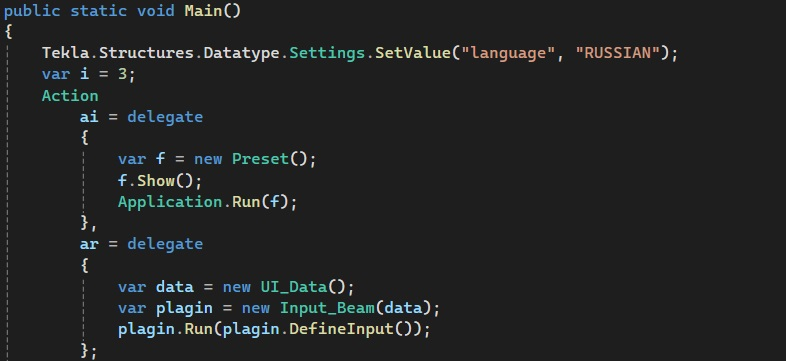
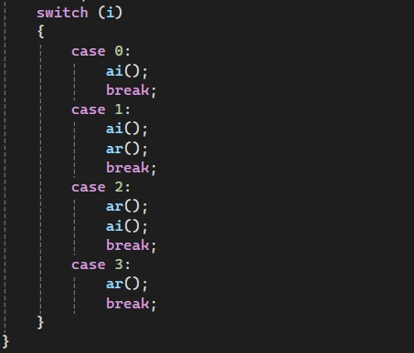
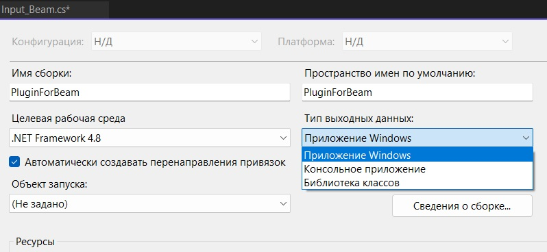
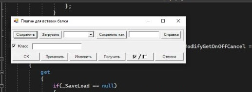
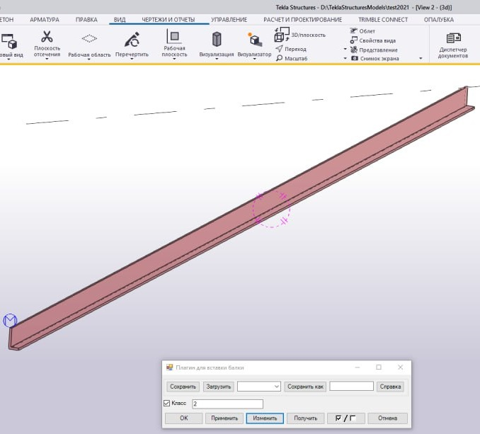
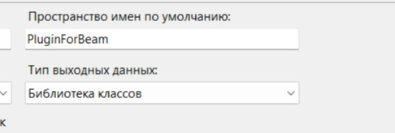

.svg)
Метод Main
Сигнатура:
Необязательной частью плагина является метод для отладки. Без него не сможем тестировать наш плагин в Visual Studio.
Создаем для этой цели метод Main (делаем его публичным и статичным). Именно здесь мы будем проверять, что наши алгоритм и интерфейс функуионируют правильно.
В первой строчке мы отпределяем с какими настройками будет запускаться интерфейс ("language","RUSSIAN"). Rогда мы запускаем плагин через Tekla, она сама накладывает эти характеристики. Когда мы его запускаем по сути в качестве отдельно стоящего приложения, мы должны это прописать сами.
Есть несколько вариантов запуска отладчика:
Чтобы все это не писать по несколько раз, мы эти типовые действия описываем в качестве делегатов, а потом эти делегаты запускаем в случае определенного значения. Сначала мы определяем какие именно действия. Но исполняться они будут в другом месте.
Внутри делегата мы создаем объект класса Preset, применяем к нему метод show, используем класс Aplication внутри Windows Forms и запускаем приложение с помощью нашей формы.
Во второй части создаем экземпляр нашего плагина. Далее идут способы запуска.
В делегатах мы только определили действия, а далее через switch определяем, что именно будет запускаться: только интерфейс, или только алгоритм, или все вместе (запискаться они могут в разном порядке). Теперь мы сможем задавать, что именно мы отлаживаем.
Для отладки нам нужно перейти в свойства проекта и выбрать "Тип входных данный" - "Приложение Windows", так как отлаживать мы его можем именно в режиме приложения.
В результате проверки интерфейса (выбираем case 0) убеждаемся, что он отображается верно. Получаем следующее окно
Далее проверяем сам алгоритм (case 3). Указываем на модели две точки и видим, что балка строится
Чтобы плагин заработал, изменяем в свойствах проекта "Тип выходных данных" обратно на "Библиотека классов"
Теперь проект нужно "Пересобрать" или "Собрать", нажав правой кнопкой мыши на название плагина. Далее также, нажав на название плагина, выбираем "Открыть папку в проводнике" => bin => Debug, здесь и находится наш плагин с расширением .dll.
Далее находим, где у нас устпановлена Tekla - папка TeklaStructures => выбираем версию программы => nt => bin => plugins и можно либо сюда поместить файл, либо создать свою папку.
Теперь запускаем клиент Tekla, запускаем любую модель (после перемещения в нужную папку, плагин доступен в любом проекте).
Важно понимать, что изменение имени плагина, означает создание нового плагина, все предыдущие вхождения плагина в программу будут неработоспособными (т.е. созданные плагином объекты продолжат существовать, но если плагин предполагает дальнейшую работу с элементами, этого делать не получится, с элементом можно будет продолжить только в рамках инструментария самой Tekla).
В случае многопользовательской модели, если разные пользователи имеют разные плагины имеющие одинаковое имя, у каждого из них экземпляр плагина будет работать по алгоритму его локального плагина.
В Tekla можно проверить, загрузился ли наш плагин. Для этого заходим в "Журналы"=>"Журнал истории сеанса", здесь показывается вся загрузка Tekla и здесь можно найти и наш плагин.